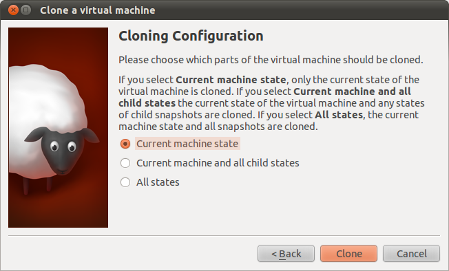

VirtualBox 從 4.1.2 版開始支援從 UI 上做複製（clone） VM 的動作（圖示是一隻小羊，還滿直覺的！），而且可以針對某個 snapshot 來做。

-
通常要勾選 Reinitialize the MAC address of all network cards
-
Full/Linked Clone
-
Current machine state, Current machine and all child states, All states。這裡的 state 置換成 snapshot 就比較能夠理解了。
參考資料
-
VirtualBox 的「再製 (Clone)」和「快照 (SnapShot)」 (2012-01) - 提到 snapshot 沒法同時啟動，可移植性低。現在的 clone 已經可以針對某個 snapshot。